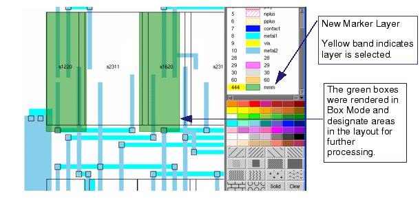

In situations
where you want to mark areas on the top-level cell to control the
processing for those regions, you can create a layer and render
boxes or polygons as a marker layer.
Procedure
- Right-click
in the Layers Browser and select Add from
the popup menu. Assign a name and layer number not currently being
used, as well as a color and fill pattern.
- On the new layer (make sure
it is selected in the Layers Browser), either set the drawing mode
to Box (for rectangular areas) or Poly (for
polygons) to render shapes that designate areas on the layout for
additional processing.
Figure 1. Marker Regions on
the Top-Level Cell